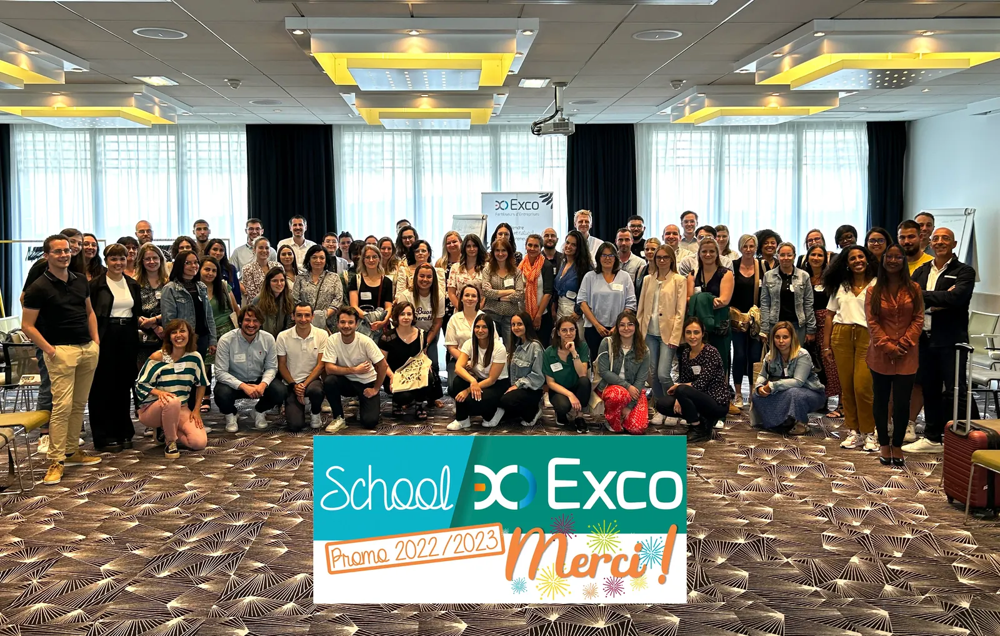
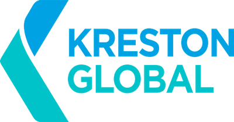
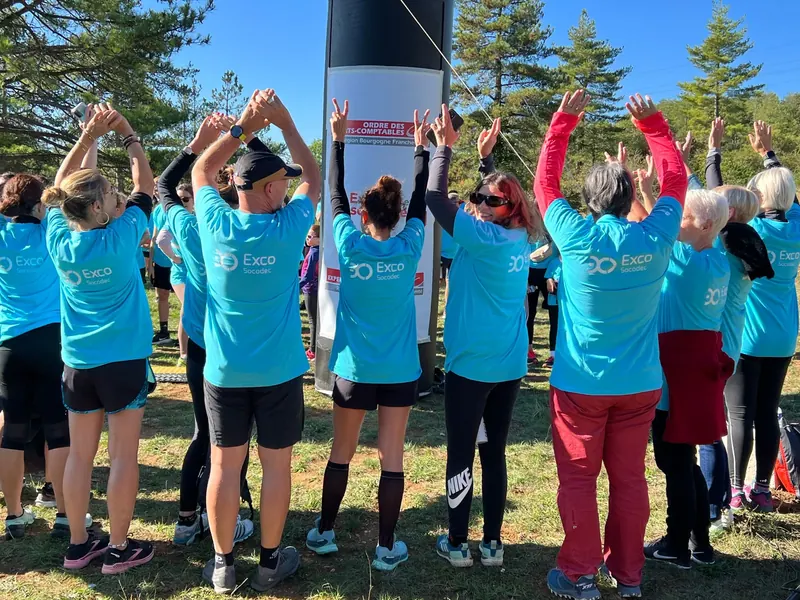
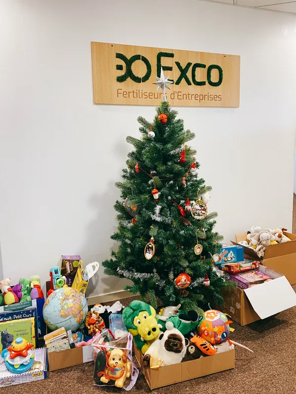
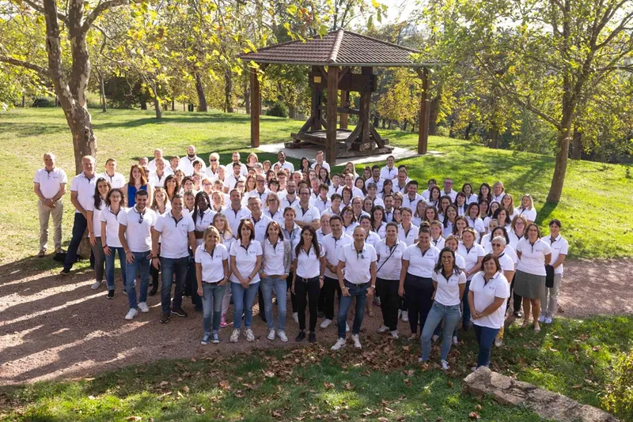
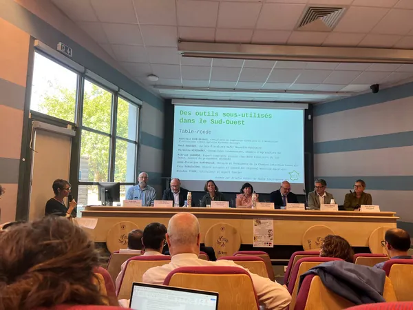
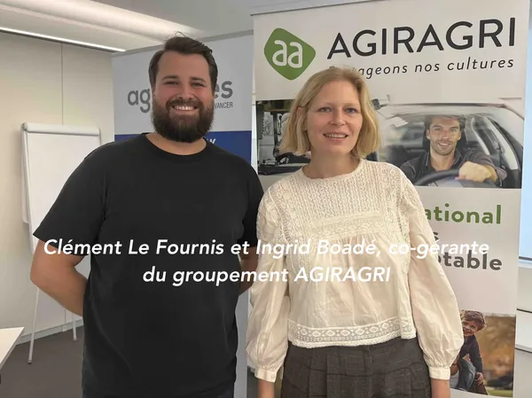

Rendre simpleet naturell’entrepreneuriat.
Exco réunit 139 cabinets d’expertise comptable, d’audit et de conseil, indépendants et proches de vous, en France et dans 14 autres pays.
f° 02 Le réseau en chiffres
La puissance d’un grand réseau, des cabinets à taille humaine.
Chaque cabinet garde son indépendance et son capital. Ensemble, ils partagent des méthodes, des outils et des expertises.
f° 03 Un métier humain
Un métier humain
Nous pensons qu’on ne fait pas un métier technique, mais humain. Nous aimons nous définir comme une communauté de fertiliseurs d’entreprises, qui vous aide à faire croître et embellir la vôtre.

f° 04 Le cycle de vie de l’entreprise
À chaque étape, une écriture juste.
Vos enjeux d’un côté, notre accompagnement de l’autre. Quatre moments de la vie d’une entreprise, et les métiers du réseau qui y répondent.
Lorsqu’un cabinet du réseau est commissaire aux comptes d’une entreprise, les règles d’indépendance de la profession encadrent les autres missions qu’il peut lui proposer.
f° 05 Nos métiers
Un plan de comptes complet pour votre entreprise.
Expertise comptable, audit, conseil, social, juridique et fiscal : la colonne de droite indique combien de cabinets du réseau proposent chaque métier.
f° 06 Secteurs
Quatorze secteurs que nos équipes connaissent de l’intérieur.
Des commissions sectorielles réunissent régulièrement les experts de tous les cabinets pour partager leur connaissance des métiers de leurs clients.
f° 07 Le réseau
Nos cabinets sont engagés sur vos territoires.
recensés
Ou utilisez votre position pour voir les cabinets les plus proches.
f° 08 Gouvernance
« Un homme, une voix. »
La stratégie du réseau est définie par un Comité directeur où chaque cabinet membre est représenté par un associé. Un Bureau exécutif élu la met en œuvre, avec le directeur général. Les cabinets restent indépendants dans leur capital.
Le Bureau exécutif
Le site annonce un Bureau exécutif de six membres élus et en présente huit ; la page RSE cite un autre président que la page Gouvernance. à confirmer
Le Comité directeur

Exco est membre de Kreston Global depuis 2008.
Kreston Global est un réseau mondial de cabinets comptables, d’audit et de conseil, chacun étant une entité juridique indépendante. Il est présent dans plus de 115 pays.
f° 09 Engagements
Un bilan qui ne se lit pas qu’en euros.
Environnement, social, solidarité, gouvernance : les actions menées par le réseau et ses cabinets, telles que décrites dans nos engagements RSE.
Mois Exco Responsable
Chaque année, un mois de sensibilisation aux enjeux sociaux et environnementaux, avec un challenge pour réduire l’empreinte carbone et une action de solidarité.
Exco a du cœur
Depuis plus de sept ans, en décembre, des collectes pour les Restos du Cœur, le Secours populaire, les banques alimentaires et d’autres associations.
Exco United
Depuis plus de sept ans, un challenge de marche connectée pour lutter contre la sédentarité.
Convention des entreprises pour le climat
Participation au parcours « Monde financier », session 2023-2024.
Index égalité femmes-hommes
Les cabinets publient leur index et travaillent à l’égalité salariale.
Duo Day
Une journée pour accueillir en binôme une personne en situation de handicap.
Bilan carbone
Plusieurs cabinets du réseau ont mesuré leurs émissions et engagé un plan d’action.



f° 10 Recrutement
Faire éclore les talents.
Un métier de chiffres, mais avant tout de proximité, de conseil et d’écoute. Rejoignez des équipes à taille humaine, reliées à tout un réseau.
recrutements en CDI par an à confirmer
L’en-tête de la page indique « près de 300 ».
stagiaires et apprentis par an
collaborateurs en moyenne par cabinet
Ils racontent leur métier
Vidéos de la chaîne YouTube Exco. Les liens directs vers chaque vidéo sont à compléter.
f° 11 Actualités
Les dernières écritures du réseau.
Articles rédigés par nos experts et événements organisés par les cabinets.

Transmission agricole : Exco FSO autour de la table pour redonner vie au fonds agricole et au bail cessible
Exco FSO rejoint Impulse Data pour renforcer l’exploitation de la donnée au service des entreprises

Matinagri Agiragri : face à l’incertitude agricole, comment renforcer la résilience des exploitations ?
Prochain événement
Transmission d’entreprise : une soirée dédiée aux dirigeants à La Rochelle
Jeudi 19 novembre 2026, 18 h 30 · Bio’Pôle, Périgny · organisée par Exco Valliance
- 18 au 22 mai 2026Exco s’engage pour les Journées de la sécurité routière au travailPassé
- 31 mars 2026La facturation électronique, de la théorie à la pratique : comment réussir sa transition ?Passé
f° 12 Rendez-vous
Parlons de votre projet.
Quatre écritures, deux minutes : nous vous mettons en relation avec le cabinet le plus proche, qui propose les métiers dont vous avez besoin.